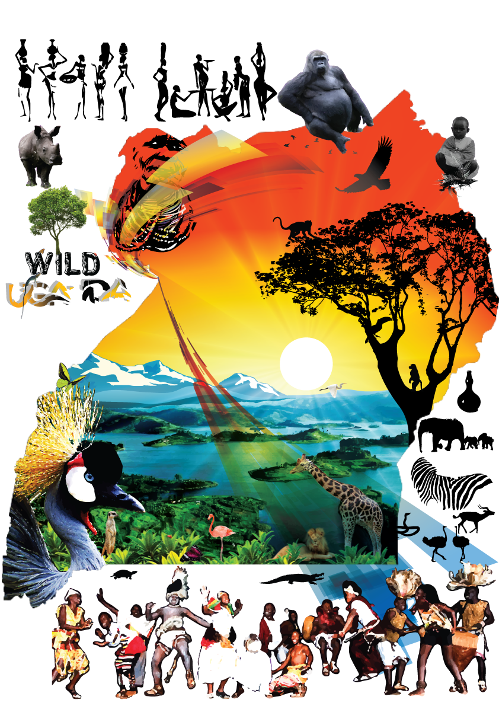

Primate Safari (9 Days)
Queen Elizabeth NP, Kibale NP, Bwindi impenetrable NP and Lake Mburo NP
This safari will take you through Queen Elizabeth NP with the dense forests of Kibale NP and Bwindi impenetrable NP and Lake Mburo NP. Giving you a wonderful wildlife viewing and unforgettable encounters with the primates of Uganda.
Day 1: Arrival
Arrival at Entebbe Airport where you will be welcomed by a Grey Horizons’ experienced driver guide and transferred to the hotel in Kampala.
Day 2: KAMPALA - KIBALE FOREST NATIONAL PARK
After a relaxed breakfast we will depart Entebbe and head west to Fort Portal, with (packed) lunch en route. Fort Portal rests in the shadow of the fabled “Mountains of the Moon” and is famous for the many tea plantations. From this lovely town we will continue to Kibale National Park, while passing the region of the Crater Lakes. Here we will explore some small lakes, before heading to our accommodation for the night. Meal Plan: Full Board.
Day 3: KIBALE FOREST & BIGODI SWAMP
Kibale Forest is reputable for having the greatest variety and highest concentration of primates in East Africa. You will therefore enjoy a guided nature walk in the tropical rainforest in search of the wild chimpanzee, red-tailed monkey, black-and-white colobus monkey and many others. After a hearty lunch we transfer to the Bigodi Swamp for another, totally different nature walk. The Bigodi Swamp Walk is an initiative of the local community and is known for its rich diversity of birds and primates. Meal Plan: Full Board.
Day 4: KIBALE FOREST - QUEEN ELIZABETH NATIONAL PARK
After a delicious breakfast we calmly transfer to Queen Elizabeth National Park. Have lunch and relax at the pool before going on a game drive in search of the first wildlife, including warthogs, buffaloes, waterbucks and elephants. Meal Plan: Full Board.
Day 5: QUEEN ELIZABETH NATIONAL PARK
The day begins early as we start with a morning game drive and head to the mating ground of the Uganda Kobs. We search for lions, elephants, buffaloes and other wild animals in their natural habitat before returning for lunch. In the afternoon we take on a boat cruise along the Kazinga Channel, a natural channel between Lake Edward and Lake George. The abundant birdlife is sighted, and the elephants, buffaloes and hundreds of hippos that are cooling off at the shores, this cruise will definitely be one of the highlights of your safari. Meal Plan: Full Board .
Day 6: QUEEN ELIZABETH - BWINDI NATIONAL PARK
After breakfast we head towards the south, to a place called Ishasha famous for the tree climbing lions. After a short game drive in this area we continue to Bwindi. While driving through a verdant countryside, you will pass traditional homesteads and enjoy panoramic views. In the afternoon arrival in Bwindi National Park, home of the endangered mountain gorillas. Meal Plan: Full Board .
Day 7: GORILLA TRACKING
The highlight of your safari: a meeting with the gentle giants of Bwindi! Especially hikers will love the tracking in the beautiful ecosystem of the park. Expect to walk a long distance before you encounter any gorillas. But it will definitely be worthwhile as you observe them closely while they eat, play and rest. A unique and unforgettable experience!
Those who prefer not to participate in the gorilla tracking can go for a guided forest walk or explore the surroundings with the Buhoma Village Walk. Meal Plan: Full Board.
Day 8: BWINDI - LAKE MBURO NATIONAL PARK
After breakfast we depart the impenetrable forest of Bwindi and head to Lake Mburo National Park. As we enter the park it is likely that you will spot some wildlife. After checking in you will go on a boat ride on the lake and enjoy the rich bird life and the many hippos that are cooling off. Have an early dinner before going on a night game drive in an open safari vehicle with spot light. This special game drive of 2-3 hours provides 30% chances of seeing the elusive leopard and of course other nocturnal animals. Meal Plan: Full Board.
Day 9: LAKE MBURO NATIONAL PARK - ENTEBBE
Early start of the day as we will go for a nature walk guided by a ranger. Lake Mburo is the only national park where you can experience a safari on foot. Return the lodge for breakfast and with a game drive on our way out we depart the protected area and drive back to Entebbe through Kampala. You will be transferred to Entebbe Airport for your international flight.
End of tour.
